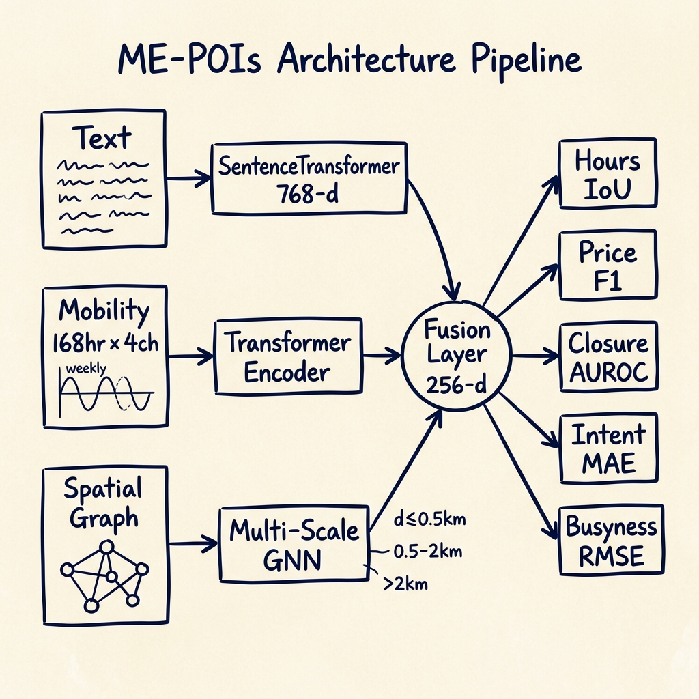

Featured walkthrough · Google Research
How mobility gives language models a deeper understanding of place
Explore ME-POIs, a model that brings together text, mobility patterns and spatial relationships to represent places. Follow the architecture, interactive maps, experiments and implementation.
Explore the walkthrough →